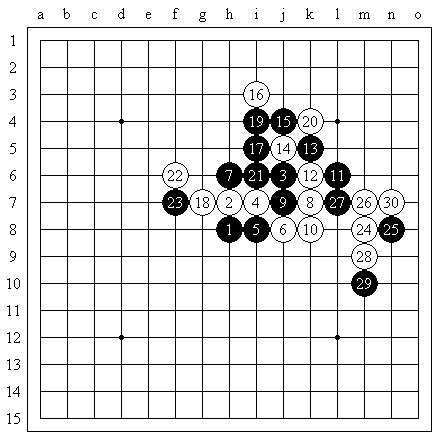
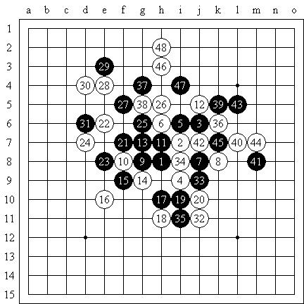
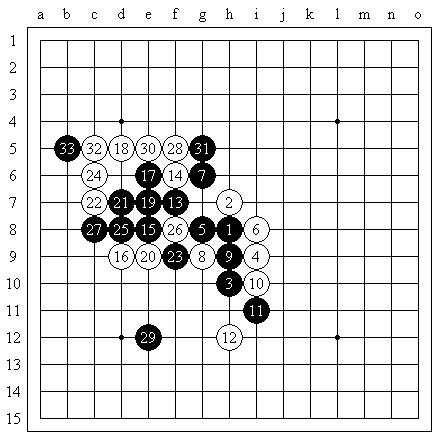

原文地址：http://hi.baidu.com/%C6%C1%B1%CE/blog/item/9759b46443294cf6f6365444.html
“天王赛”预赛，北京市东城区海运仓社区活动站
疏星局（不换），5A=g7，田汉法（黑）负李一（白）

尝试白6的变化，目前认为还是7-18最强，针对这个7，8-g6或18都是比较熟悉的套回其他变化的选择，但是由于最近心境的变化，我还是更加乐于尝试一些比较积极的招法。11是关键的选择，或许可以考虑对攻？13若逆止，14-27？14-24则15-26，由于有上方的限制，就没往下细算，感觉上好像杀不掉。14作为防守也是使用了很积极的手段。以下至21黑棋失先！22是轻闲的一手，24的选点已没有后顾之忧，复盘分析24白必胜。
“天王赛”预赛，北京市东城区海运仓社区活动站
长星局（不换），5A=h6，张铁良（黑）负李一（白）

张铁良老师给出实战中少见的长星，对于我们这一代棋手而言变为疏星理当是最佳选择，实战的4是富有挑战性的变化，8-42则9-45白弱，事实上9-12，10-33的变化异常复杂。11-13，12-14形势要生动一些，实战的变化感觉黑棋有些损。之后黑棋以进攻将白棋的外势变薄了，31后我也并没有看到明确的必胜区域，但在白棋积累优势的过程中黑棋弈出了37大恶手！之后白必胜了。
“天王赛”预赛，北京市东城区海运仓社区活动站
瑞星局（不换），5A=g7，李涛（黑）负李一（白）

这局棋非常之郁闷，当时似乎是有些不和谐，身体忽然特别难受，面对完全离谱的两打我也开始犯晕……12-13稍好，13后的第一感就是黑必胜了。然后选择了一个没有明确杀出的14来防守，以下黑棋23-g4的进攻还有些小问题……实战交换到28，29忽然脱先（大概是误算了做杀）！白棋简单追胜了。
第一局，如果１０＝１２还原比较正常，实战１１方向感不好，之后１３必然，但１３必败。如果１１下防，１２白棋只有逆止，之后黑棋所占空间较大，易下。
第三局８＝１０，抓８，实战搞平了。１２似乎不积极。１３好棋，但１７僵硬，如果向上发展感觉不错。